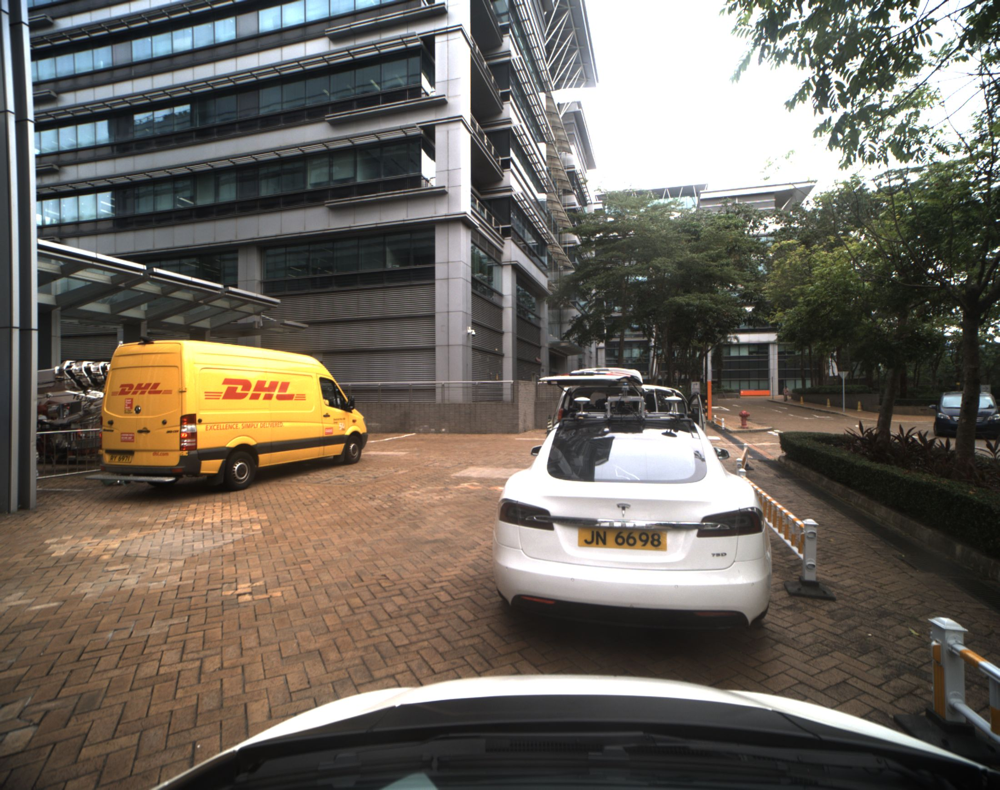
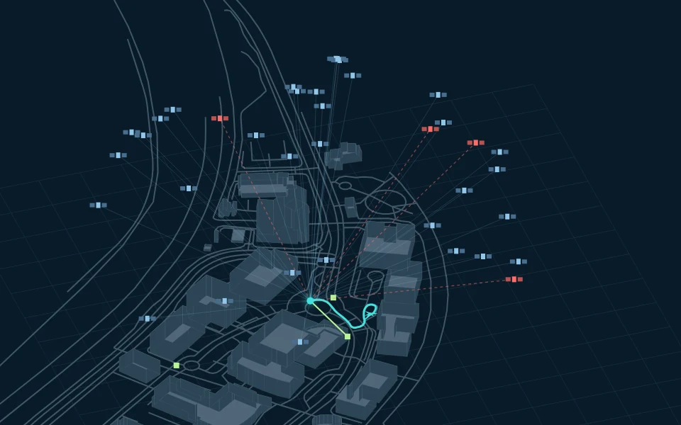
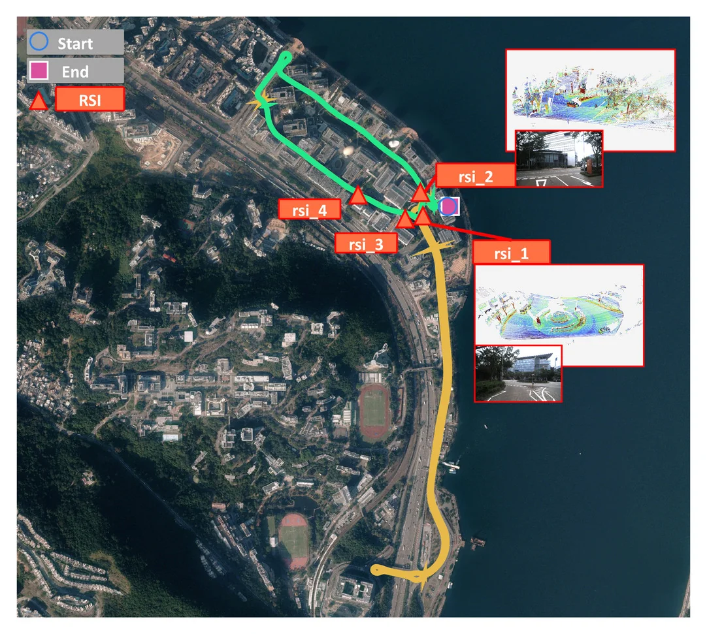
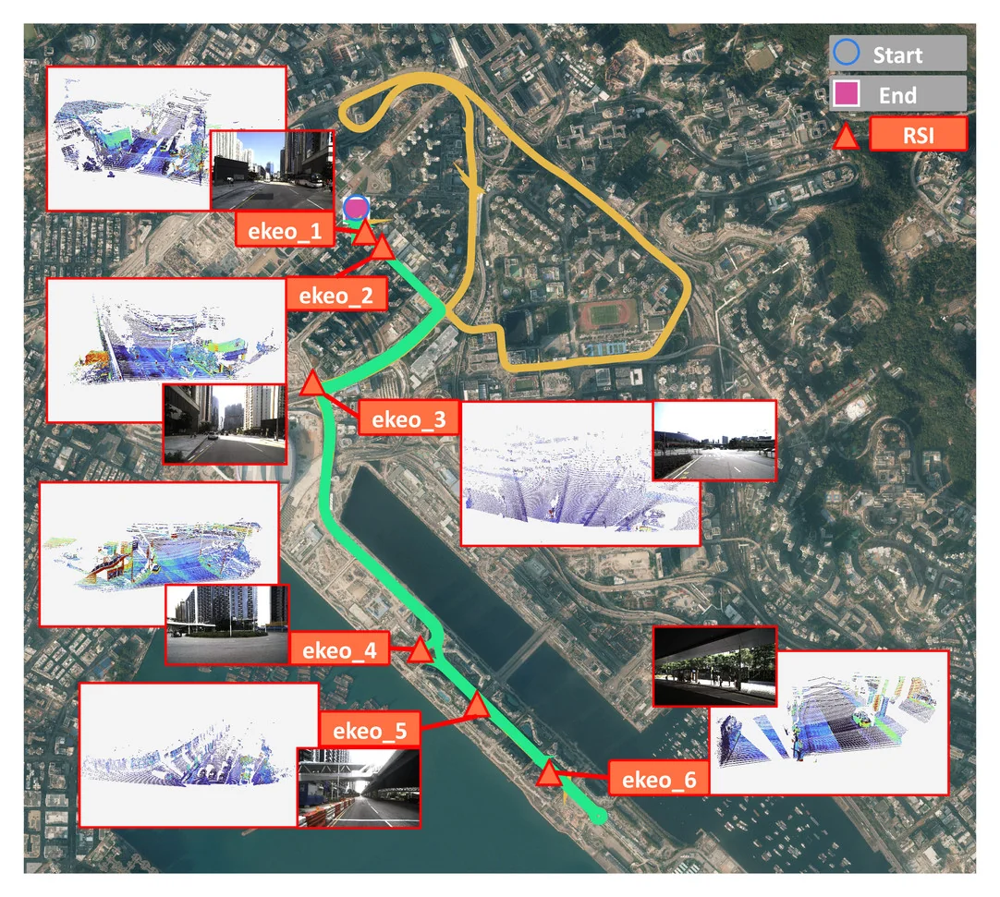

SURROUND CAMERAS
image_0–image_6 · 360° coverage · 10 Hz.
TAS LAB · THE HONG KONG POLYTECHNIC UNIVERSITY
A vehicle–infrastructure dataset for urban navigation. Real streets, synchronized sensing and complementary viewpoints for perception, positioning and simulation.
THE FULL FILM
01 / THE DATASET
Synchronized vehicle and roadside recordings from Hong Kong Science Park and East Kowloon.

image_0–image_6 · 360° coverage · 10 Hz.
Velodyne HDL-32E · Hesai XT32 · Hesai AT128P.
Image and point cloud alignment across seven cameras.
Vehicle and roadside point clouds with 3D vehicle annotations.

© OpenStreetMapRaw satellite observations, ranging and GNSS-RTK/INS trajectories.
CARLA maps of Hong Kong Science Park and East Kowloon.
3D Gaussian Splatting and point cloud reconstruction.
IMU, vehicle motion and V2X communication records.
02 / COLLECTION SITES

A compact C-V2X testbed, with local loops and longer expressway routes.

Dense urban streets, elevated roads and highway tunnels.
03 / DATASET PREVIEW · SENSING
04 / DATASET PREVIEW · RECONSTRUCTION